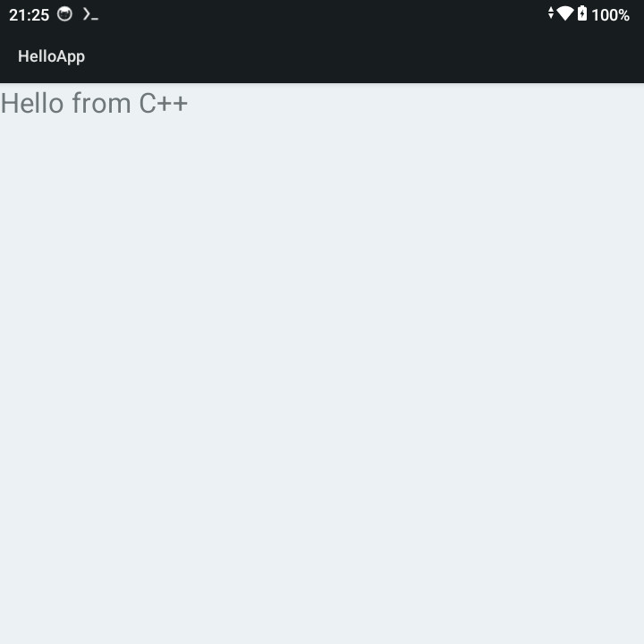

編譯環境
$ java -version
openjdk version "17.0.17" 2025-10-21
$ sdkmanager --version
12.0
$ gradle --version
Gradle 8.2
$ sdkmanager "platform-tools" "platforms;android-34" "build-tools;34.0.0"
settings.gradle
pluginManagement {
repositories {
google()
mavenCentral()
gradlePluginPortal()
}
}
dependencyResolutionManagement {
repositories {
google()
mavenCentral()
}
}
rootProject.name = "hello-android"
include(":app")
build.gradle
buildscript {
repositories {
google()
mavenCentral()
}
dependencies {
classpath "com.android.tools.build:gradle:8.2.2"
}
}
執行如下命令：
$ gradle wrapper $ ./gradlew $ mkdir -p app/src/main/cpp $ mkdir -p app/src/main/java/com/example/hello $ mkdir -p app/src/main/res
app/build.gradle
plugins {
id 'com.android.application'
}
android {
namespace 'com.example.hello'
compileSdk 34
defaultConfig {
applicationId "com.example.hello"
minSdk 21
targetSdk 34
versionCode 1
versionName "1.0"
externalNativeBuild {
cmake {
cppFlags "-std=c++17"
}
}
}
buildTypes {
release {
minifyEnabled false
}
}
externalNativeBuild {
cmake {
path "src/main/cpp/CMakeLists.txt"
}
}
ndkVersion "27.0.12077973"
}
app/src/main/AndroidManifest.xml
<manifest xmlns:android="http://schemas.android.com/apk/res/android">
<application
android:label="HelloApp">
<activity
android:name=".MainActivity"
android:exported="true">
<intent-filter>
<action android:name="android.intent.action.MAIN"/>
<category android:name="android.intent.category.LAUNCHER"/>
</intent-filter>
</activity>
</application>
</manifest>
app/src/main/java/com/example/hello/MainActivity.java
package com.example.hello;
import android.app.Activity;
import android.os.Bundle;
import android.widget.TextView;
public class MainActivity extends Activity {
static {
System.loadLibrary("native-lib");
}
private native String stringFromJNI();
@Override
protected void onCreate(Bundle savedInstanceState) {
super.onCreate(savedInstanceState);
TextView tv = new TextView(this);
tv.setText(stringFromJNI());
tv.setTextSize(24);
setContentView(tv);
}
}
app/src/main/cpp/CMakeLists.txt
cmake_minimum_required(VERSION 3.22.1)
project("myndkapp")
add_library(
native-lib
SHARED
native-lib.cpp
)
find_library(
log-lib
log
)
target_link_libraries(
native-lib
${log-lib}
)
app/src/main/cpp/native-lib.cpp
#include <jni.h>
#include <string>
extern "C" JNIEXPORT jstring JNICALL
Java_com_example_hello_MainActivity_stringFromJNI(JNIEnv* env, jobject _this) {
std::string hello = "Hello from C++";
return env->NewStringUTF(hello.c_str());
}
編譯
$ ./gradlew assembleDebug
$ file app/build/outputs/apk/debug/app-debug.apk
app/build/outputs/apk/debug/app-debug.apk: Android package (APK), with gradle app-metadata.properties, with APK Signing Block
完成
